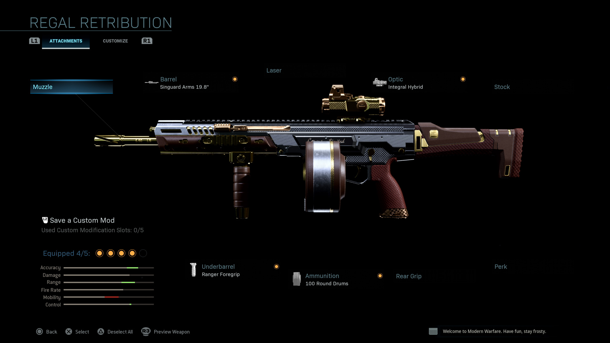
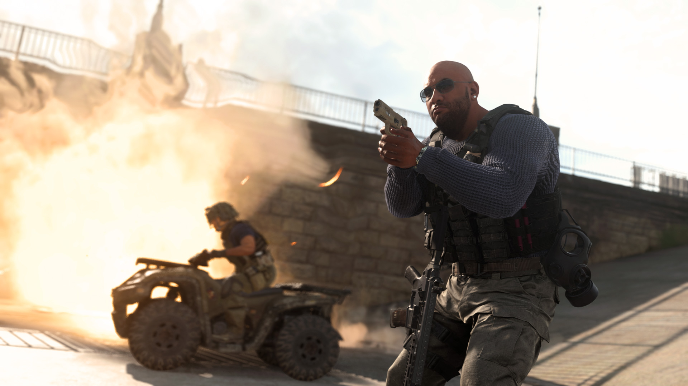
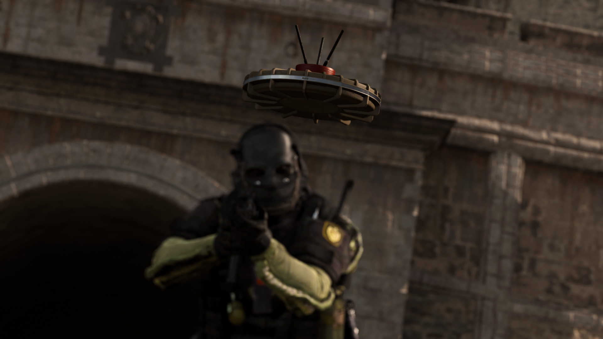
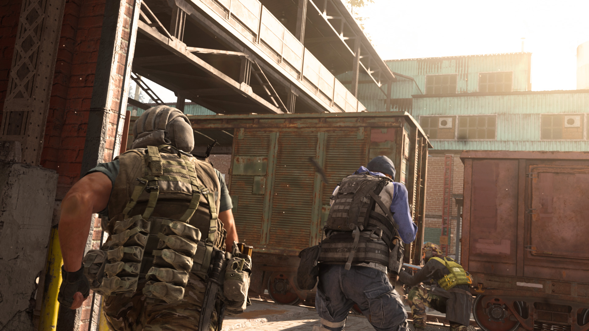

Primary Weapons
Although Warzone is a new Call of Duty mode, those who have played Modern Warfare will be at home with the familiar weapons from the full game.
In the wild, a weapon is a weapon; beggars can’t be choosers when looting around Verdansk in Battle Royale mode, and whether you find a sidearm or an assault rifle, it’s better to have a weapon than to be caught without one.
However, within Loadouts and Loadout Drops, there is some segmentation between primary weapons and secondary weapons. Primary weapons are, in the main Modern Warfare experience, the primary way of dealing damage to enemies.
Here’s a look at all seven types of primary weapons – assault rifle, submachine gun (SMGs), shotguns, light machine gun (LMGs), marksman rifles, sniper rifles, and melee – that you’ll find both in Verdansk with pre-determined attachments where applicable, as well as your Loadouts to level up and fully customize to your personal preference:
Assault rifles
Out of all the primary weapon categories, assault rifles are king by sheer size alone. No other category comes close to the number of unique assault rifles, as it is the only class with double-digit unique weapons.
The largest weapon category is the most diverse; from high-damage battle rifles to fast-firing compact rifles, one could theoretically create a variety of Loadouts with every assault rifle and still fit nearly every combat situation. And while being a jack of all trades can sometimes mean “master of none,” weapons in this category are fantastic for medium range engagements.
Take the first assault rifle you’ll unlock – the Kilo 141 – for example. On one hand, it can be customized to be a stealthy CQB (close quarters battle) option thanks to an integrated suppressor barrel…
But, with four other completely different attachments, its design resembles a Light Machine Gun, especially with a 100 Round Drum.
No matter how you customize this weapon – and the majority of assault rifles, for that matter – it will usually be a reliable 3-5 shot kill within a few dozen meters against an opponent with zero armor.
A standard assault rifle will usually come with a 30-round magazine, allowing you to get in multiple engagements in quick succession. These magazines and the overall size of these weapons hinder your Operator’s mobility slightly, but it usually puts them the middle of the pack compared to Operators holding other weapons.
When picking up an assault rifle in the wild, it’s okay to assume all the above generalizations. However, there are a few wildcards that sit in this category, starting with those labelled as “battle rifles,” or have a description that highlights “high damage” or “slow cycle rate.”
One such weapon is the Oden, a fully automatic bullpup assault rifle that can theoretically down an enemy with just two shots. And, if that wasn’t impressive enough, equipping some attachments can even bring that two-shot range out to over 100 meters.

Consider these weapons to function as a bridge between proper assault rifles and marksman rifles; they can down enemies more reliably at range with fewer shots but are far slower in terms of handling and fire rate compared to other weapons in their class. As in-game loot, these weapons may come with a high-magnification scope, allowing you to see enemies at greater distances and lay down that high-power fire on them.
Other wildcards within the assault rifle category are weapons that specifically excel in stealth situations; most weapons with attachable integrated suppressor barrels – effectively being two-in-one attachments – are assault rifles. One assault rifle – the M13 – even has an ammunition attachment - .300 Blackout 30-Round Mags – that removes enemy skulls over your dead targets (so your foes can’t ascertain the location of where their squadmate died).
These stealth attachments are fantastic within the Warzone setting, as relying on your senses is a major key to survival, and anything that can hinder your opponent’s senses could be a major boon to success.
Last, but certainly not least, all but one assault rifle has a built-in select-fire option, meaning that they can fire fully automatic or with single fire. Single fire is fantastic for placing more accurate shots, as it forces you to pull the trigger manually to release each bullet in a magazine, giving you time to readjust aim and account for movement.
Another select-fire option is burst fire, which every automatic assault rifle can become to mirror the lone burst bullpup rifle in this category.
By equipping the weapon perk Burst on a non-burst fire weapon, your chosen assault rifle will fire three shots in quick succession with each pull of the trigger. While there is a short delay between bursts, this method of firing offers a happy medium between the stability of semi-auto fire and the raw firepower of fully-auto. Just remember: You can figure out if an assault rifle is burst fire and not fully-automatic by looking at the iconography in the bottom right corner of your HUD underneath the currently-equipped weapon.
Submachine Guns
Compared to assault rifles, the second primary weapon category sacrifices some effective range and damage in exchange for being faster firing and more effective in close-range situations, such as inside buildings or in tight alleyways.
This boils down to these weapons’ overall design and the caliber they chamber. As a standard, the minimum magazine size of these weapons is 25-rounds, but usually, a SMG in the wild will come with a magazine size of about 30 to 32 rounds. Sometimes, you may find an SMG that can carry 50 or 64 rounds as a standard or, with one weapon, an 84 round magazine attachment that even puts some LMGs to shame!
Why do these magazines have so many bullets? Because SMGs deal less damage per shot, on average, than an assault rifle. Some SMGs have additional magazine attachments that change the caliber of bullets they fire, enabling them to be on-par with their assault rifle cousins.
However, in general, expect an SMG to take down an enemy with no armor in 4-6 shots up close with their standard caliber of ammunition. Taking out enemies that are more than a few dozen meters out will be tougher, given the higher recoil tendencies and significant damage drop-off these weapons have at longer ranges.
That high recoil comes with the territory of having small caliber bullets that are being fired out at a high fire rate. In other words, you won’t have to worry about laying off the trigger in close-range, or aiming down sights, for that matter, when it comes to extremely tight engagements.
The hip-fire spread on SMGs is some of the lowest out of all primary weapons, and it can even be close to ADS (aim down sight) accurate with certain attachments, such as the 5mW Laser. However, these attachments do come with drawbacks, especially the 5mW Laser, which can expose your position since it is visible to anyone nearby.

Outside of close-quarters engagements, learning and controlling recoil – either with attachments or with trigger discipline – is a must even at a dozen meters out. All SMGs do have a semi-automatic mode, although it often contradicts the strengths of this weapon category. However, if you lack any other weapon to deal damage at range, this fire method could be swapped to in a pinch.
The world of SMGs is dominated by those who adopt a run-and-gun playstyle; weapons in this category share high mobility to couple their fast-firing tendencies. On average, SMGs can be considered the second fastest primary weapon category when it comes to movement speed, aiming down sights, and firing out of sprint, and can become even faster by equipping certain attachments for your Loadout Drop SMG.
These attachments do come with some downsides; taking off the stock and shortening the barrel of these SMGs may make you a hostile, mobile, and agile Operator, but be prepared to deal with some serious recoil issues.
Finally, when it comes to reloading, SMGs are notorious for being quick. Their small, interchangeable cartridges are not only light, but also easy for Operators to slot in whether they still have some ammo inside or are completely spent.
The Sleight of Hand weapon perk will make these reloads even more ridiculously fast, but then again, you’ll have to weigh that option with the dozens of other awesome attachments that can be had on these weapons.
Shotguns
Shotguns are the ultimate CQB weapon choice, capable of ripping an enemy – or even two or three packed together – to shreds with only a single shell.
By default, all shotguns within Warzone fire buckshot; unlike a rifle, pistol, or machine gun that fires a bullet, a shotgun fires out smaller pellets from a shell. When you fire a shotgun, these pellets spread out from the barrel, with each individual pellet dealing damage.
In other words, pellets can spread to multiple targets, especially at longer range. This happens no matter if you aim down sights or hip-fire, and if you do the latter, your crosshair will be a circle that represents the pellet’s potential spread area.
However, all shotguns can be outfitted with an optional slug round attachment, specifically a 437 gr hardcast slug. These slugs are powerful bullets that concentrate all the damage you would output with a regular shotgun shell into a single heavy projectile.
Unlike pellets, slug rounds deal with bullet drop. All slug rounds are zeroed in at 30 meters, meaning that they will maintain a straight line when fired until they go past 30 meters or hit an object or – hopefully – an enemy.
After 30 meters, the slug will drop down due to physics. You can account for this drop by aiming up slightly when firing at a target. Furthermore, if that target is not stationary, you may have to lead your shot – predicting an enemy’s movement and aiming slightly to the left or right to catch them on the move.

Whether you use slugs or pellet rounds, the reload speed for all shotguns are considered the fastest out of most primary weapons. This characteristic allows you to duck into cover, quickly reload, and pop back out ready to deal more damage.
Speaking of speed, shotguns are the most mobile weapons out of all primary weapons, and even rival handguns as the armament with the fewest penalties to movement speeds. These penalties can be even less significant with certain attachments, such as shorter barrels or removing the stock, whose recoil-increasing effects do not matter as much given how these weapons fire.
Like all weapon categories, shotguns aren’t perfect; one of their biggest drawbacks is their magazine capacity. While there are attachment choices that boost specific shotgun’s individual mag capacity to 12 rounds or even 25, you’ll usually pick up a shotgun with less than double-digit rounds in a magazine. Then there is the case of the 725 which, despite its damage and range, only holds two rounds of ammunition before needing a reload.
Much like carrying capacity, shotguns lack range. A typical shotgun’s effective range is, at best, the length of a standard apartment room and, at worst, about the length of a standard desk. Although slug rounds can directly remedy this issue, they are severely unreliable when hip-fired, and make a shotgun tougher to use as they significantly reduce your margin for error.
However, range should not matter to a veteran shotgun user; these weapons are meant for close engagements, whether that be inside individual rooms, in tight alleys, or right up in a rival Operator’s face.
Light machine guns
These fully automatic weapons fire high-caliber bullets that can punish opponents at any range. Most LMGs come with high-capacity magazines; while some only carry a measly 30-rounds, don’t be surprised to see 100, 150, or even 200-round magazines on an LMG out in the wild.
LMGs, of course, have their downsides, the most obvious being their sheer size and weight. All that metal is going to weigh down any Operator in the field, making mobility tough compared to a slimmer SMG or Assault Rifle.
Doing anything with an LMG, whether that is switching to it, aiming down its sights, or firing it after sprinting, will take longer than taking those same actions with nearly any other primary weapon. That includes reloading these massive weapons; expect to wait upwards of double-digit seconds to swap out a magazine, especially when it comes to empty mags or those with incredible carrying capacities.
In general, these downsides make patience and choosing your battles wisely two key virtues of the LMG code. During team game modes, it may be wise to have a teammate cover you while you reload an LMG, while acting in a solo capacity, using recon and defensive tools could be necessary to ensure a safe reload.

An LMG doesn’t have to be a massive weapon, however; some LMGs, such as the Holger-26 shown above, have attachments that significantly reduce the weapon’s overall profile, making it easier to move around and aim down sights with. Those who may not feel comfortable with a standard LMG may want to try these weapons with these kinds of attachments, as it could help ease your way into this category.
However, no matter if you use the Holger-26 or the MG34 or anything in between, one other issue needs to be accounted for: recoil. When fired as a fully automatic weapon, LMGs have some of the biggest vertical and horizontal kicks out of all weapons in the game.
There are a few things you can do to manage recoil, with the first being semi-auto fire. Like assault rifles and SMGs, LMGs can be fired bullet-by-bullet, allowing you to selective expend ammo.
Selective fire can also be done with a bit of trigger discipline; the recoil on these weapons gets worse as you fire more bullets. Grouping shots into five to ten round manual bursts with shorter trigger pulls rather than laying down suppressing fire – which has its own uses if you’re wanting to make a statement and drop multiple foes in a more chaotic manner – could make these weapons easier to manage down range.
Furthermore, it may be in your best interest to equip your LMG-based Loadouts with attachments that reduce recoil. This includes the Bipod, which reduces recoil while crouching or prone, two stances that most gunners take when firing these weapons.
Then comes the subject of mounting: LMGs are built especially to be put down and mounted onto cover or walls (or even the Deployable Cover Field Upgrade). Mounting significantly reduces recoil, making it easier to fire dozens of bullets down range in a single trigger pull when it is necessary.
A mounted LMG may be an LMG in its most useful state. These weapons may be tough to move around with and reload, but when it comes to laying down fire, few can match the sheer power of these massive guns.
Marksman Rifles
The marksman rifle category can be described as the “Misfit Rifle” primary weapon category. Here, you’ll find everything from battle rifles to bolt action rifles and even a Crossbow.
However, these weapons share one common trait: in the hands of a skilled soldier who understands their individual strengths and weaknesses, they can be deadly.
At first, you may think this category is an extension of the sniper rifle category. And you would be right, to a point. Yes, these are slow-firing, high damage weapons, but they are more effective in close-range fights than snipers, trading off some effective range for better handling statistics.
In general, an Operator holding a marksman rifle can move, aim down sights, and fire out of a sprint more quickly than one using a sniper rifle. Therefore, marksman rifles are great for those who want to use a weapon that is powerful like a sniper rifle, but also want to be more mobile around the Warzone.
You can still use a marksman rifle like you would a sniper, especially when using certain attachments that boost range and provide a magnified sight picture, but a marksman rifle may truly shine in your hands when it is used aggressively. This brings up a style of play called quickscoping, which marksman rifle users may find to be effective over the traditional scouting and sniping role.
Quickscoping is when an Operator acquires a target without aiming down sights then, when their crosshair is over a target, quickly snaps the aim button, firing when their reticle or iron sights is on the target, and releases the aim button after the shot is taken. Although it is a difficult skill to master, it can be used to maximize a marksman rifle’s more agile mobility and still-strong damage profile.
That damage profile translates to this rule of thumb: getting a headshot with any marksman rifle at any range can down any foe with full health and no armor.

Even with its range issues, which should still be considered no matter the marksman rifle, these weapons are able to take down an unarmored trio with only three bullets… provided that the Operator can land those shots. This trait across all marksman rifles makes them high risk, high reward weapons, especially when quickscoping.
Outside of the three main marksman rifles, the Crossbow sits in a class of its own. The final new weapon out of Season One of the full game, the Crossbow has a damage profile nearly identical to the most powerful sniper rifle in terms of damage per bullet within Warzone.
However, this comes with a catch; crossbow bolts drop off significantly faster than bullets, making longshots a matter of calculating the correct angle to hit a distant enemy, not to mention leading your shot to meet a moving target. The range before a bolt drops off can be increased with attachments, but this may come at the cost of worse handling or accuracy.
The Crossbow also has several ammunition attachments that allow it to fire timed explosive, gas, or thermite tipped bolts. These more deadly bolts all have gnarly effects on enemy players and/or equipment… But you will be unable to recover these bolts as you would a standard Crossbow bolt.
Given the high skill floor of these weapons, less experienced players may want to get some reps in Multiplayer before deciding to make marksman rifles must-loot items or a standard in their Loadouts. However, once you’ve mastered one – or all – of these weapons, your enemies may regret leaving these powerful tools available for the taking.
If you haven’t used the Crossbow already, find it randomly during a match or purchase the Ice Lance blueprint variant as part of the Arctic Beast Bundle in the Store.
Sniper Rifles
Sniper rifles live and die by one adage: one shot, one kill.
These weapons chamber the most powerful bullets in Warzone, able to knock an enemy down to the ground even when they are hundreds of meters away. However, with great power comes great recoil; firing one of these weapons will leave your Operator reeling unless the weapon is mounted or outfitted with multiple recoil reducing attachments.
Furthermore, with two out of three available sniper rifle weapons being bolt-action, and third being a gas-operated semi-auto, don’t expect to make follow up shots at the same pace as you would with an assault rifle. This does make recoil less of an issue, but a sniper’s kick may still throw you off target for when you are ready and able to take that second shot… if it is necessary.
When using a sniper rifle, the fewer shots needed to take an enemy down, the better, as a limited magazine capacity with a longer-than-usual reload time is coupled with a high kick and low fire rate. So, whether you can snuff an enemy with the barrel or three football fields away, accuracy is your main key to success with a sniper.
For your convenience, every sniper rifle is equipped with an 8x magnification scope, with attachments allowing you to either reduce it to as low as a 3.0x magnification all the way to 12.6x more powerful than the naked eye. This makes sniper rifles phenomenal weapons to scout with, as you can use the scope to see distant landmarks or targets and plan your actions accordingly.
Most, if not all, scopes, including the standard Sniper Scope, have their targeting reticle complete with bars or dots below the main crosshair. This is your way of accounting for bullet drop; although all these sniper rifles will be zeroed in for about several dozen meters, or enough for mid-range engagements, these bullets will drop off when trying to hit a target at extremely long ranges.
That’s where these marks come in: they act as your guide to hitting a target at specific long ranges, with each scope having a different scale and way of showing these ranges.
Outside of Warzone, you can try out bullet drop within the single player Campaign, which includes a great introductory to this element of the game in one of its missions, or Modern Warfare Ground War Multiplayer. Otherwise, learning how to master a specific sniper rifle with a specific reticle boils down to practice.
One good way to learn the ins-and-outs of a scope is pinging an enemy target and seeing how many meters the ping calls them out on. Once you line up a shot with these marks under the main crosshair, take it and see if it hits. Adjust your aim accordingly and take notes as to what these marks mean for distance.

While this all may seem trivial, the best snipers in Warzone are smart with when, where, and how they fire. Sniper rifles may seem to have a low skill floor at first, but sniping masters can be able to wipe out an entire team without them knowing what exactly hit them.
With that in mind, there is one big counter to any sniper rifle user, or anyone using a scope with a high magnification: scope glint. Scopes give off a white glint, which gives away a sniper’s position. Knowing where that glint is and using it against a sniper is key to counter-sniping an enemy, or at least useful for figuring out what areas are safe and when to take cover.
Secondary Weapons
Just because these weapons are labelled as “secondary” doesn’t mean they should be a last resort. In fact, in specific situations, these weapons are second to none in Warzone, able to take down vehicles, deal immediate lethal damage, and even be your main source of reviving yourself.
When creating a Loadout, you should try and cover a primary weapon’s shortfalls with an appropriate secondary weapon or use this slot to further augment a Loadout into even more of a niche role. Secondary Weapons are split into three categories: handguns, launchers, and melee.
The Riot Shield
Rounding out the primary weapons is the melee category with only one current option: the Riot Shield.
This weapon is unlike any other in Warzone, as it is based on an age-old premise: the best offense is a powerful defense. The Riot Shield is ballistic-proof and explosive resistant, or in other words, blocks bullets and reduces damage from all explosive devices.
Any bullet that hits this shield will be deflect off, protecting its user and anything else behind it. This can be helpful when defending an objective or a downed teammate who is being revived by a third member of your Trio.
Because this Riot Shield is large, it renders an Operator less mobile compared to some weapons, such as shotguns or SMGs. Despite its size, however, it does not cover an entire Operator; an Operator who is standing up straight will leave their ankles and feet susceptible to damage, and sprinting while using a Riot Shield will leave even more flesh out in the open … And, of course, any Riot Shield user will have a theoretical target painted on their completely exposed back.
Therefore, Riot Shield users will most often crouch to keep almost all their frontside covered by the shield. While crouch walking with this shield is slow, it is the most defensive tactic one can take while using it.

Another effective way to use this shield is to leave it on your back. Since it is strapped behind you, it will deflect any bullets that come into contact with it, leaving less surface area open for enemies to shoot you in the back.
Outside of bullets, the Riot Shield will act as a backboard for thrown equipment pieces except anything that can stick to it or catch it on fire. This can lead to some misdirection plays; an enemy Frag grenade could bounce right off and return to sender, or a teammate that needs to take cover can use it to ricochet a Snapshot Grenade into a doorway.
The last defining characteristic of the Riot Shield is that it deals melee damage in a safe, and effective, manner. An enemy with no armor can be knocked down with a Riot Shield in just two hits, and the shield user can remain mostly covered by the shield while attacking.
However, attacking with this shield should only be a last resort; defensive and otherwise unconventional tactics are recommended when using the Riot Shield, and while you have it on, be extra careful of anything sticky or flammable.
Handguns
A wise Gaz once said, “Remember, switching to your pistol is always faster than reloading.”
Your handgun is your trusty backup option for when a primary weapon runs dry. Or, in the beginning of a standard Warzone match, you’ll drop in with only a handgun to your name.
Every fiber of your Operator’s being may direct you to swap out this pistol with two primary weapons (using the Overkill Perk), since you may think all of them can be outclassed by other weapons within Warzone. Here’s a few reasons why you might be wrong:

First, handguns have some of the fastest handling and mobility statistics in the game. When you need to run around the Warzone map quickly, taking out your sidearm will often speed you up (even if you’re carrying a slow-handling primary weapon). And, once again, it is a reliable choice whenever your main weapon is out of ammo in the middle of a fight.
Second, every handgun can fill still fill a niche hole within a loadout, complimenting types of primary weapons nicely. Need a rapid-firing backup to a long-range beast of a sniper rifle? Look no further than the M19, a high fire rate weapon with a strong magazine capacity that can be extended up to 32 rounds. What about a powerful, longer-range option to go with your shotgun? The .357 has the best range in this weapon class and can down an enemy with no armor in a single headshot.
Speaking of the .357, one attachment, Snake Shot, swaps out its .357 bullets for buckshot-filled shells, turning this pistol into a pocket shotgun without the need to use the Overkill perk in your Loadout.
Launchers
The launcher weapon class fills the most niche role in any loadout: vehicle and splash damage.
Within Warzone, most weapons will be more accurate and deal more reliable damage to rival soldiers. However, when facing enemy equipment and vehicles, few things are more devastating than a well-placed shot from a rocket launcher.
All four launchers that are available for Loadouts all have different tactics and usage tips, with the fifth available launcher, a grenade launcher that is considered Legendary loot, another effective tool for destruction. For the purpose of this guide, however, we’ll break down the four main launchers.
The first launcher you’ll unlock for Loadouts is the PILA, otherwise known as your standard lock-on, fire-and-forget launcher. This launcher can knock out a UAV swiftly in just one missile, or do sizable damage to a helicopter, ATV, or Tactical Rover.
Locking on to a vehicle or drone with the PILA is as simple as aiming down sights towards the vehicle and keeping it within the sight picture for a few seconds. Once the targeting reticle blinks red, you can then fire and go about your business, as the rocket will follow the vehicle until it explodes or is misdirected by flares.
The PILA also has a free-fire function that can be used to hit enemies on foot, although its splash damage isn’t as powerful as other launchers in this category. In a pinch when there isn’t enough time to lock-on, free-firing the PILA at a fast-moving ground vehicle can be done, but usually, this is the launcher you would use to lock onto vehicles before turning them into scrap metal.
Those who want a free-firing rocket launcher should look to the Strela-P. This launcher has no lock-on function but has armor-piercing rockets that deal more damage to vehicles compared to the PILA.
While those armor-piercing properties won’t mean much to a flimsy UAV – or foot soldiers, since the actual explosive yield is technically smaller – it will do massive damage to the various player-driven vehicles of Warzone.
Think of this as the PILA with a higher skill floor: those who can lead these rockets well and make accurate shots can do more damage to vehicles than the PILA, but the lack of a lock-on makes the Strela-P unforgiving when you miss those shots.

Then there is the JOKR, another fire-and-forget launcher that is a bit more complex than its PILA cousin. This launcher has a massive explosive yield and attacks vehicles or specific locations from the top down, although using it may take some practice.
When using the JOKR, you must first aim down sights and, if you want, turn on or off its optional thermal sight. Next, look towards the vehicle or location you want to target and lock onto it using the fire button.
If there are multiple potential targets in the area and it locks onto the wrong one, don’t worry; let go of the fire button, adjust the aim, and try again. If you are too close to the target, a big red X and a warning will pop up on screen to let you know that it won’t fire.
After holding the fire button for about three seconds, the HOLD pop-up will turn to FIRE a second before the missile leaves your JOKR. Once it does, it will either travel straight up and down towards the locked-on location or, if you locked onto a vehicle, travel with it until it explodes or is deflected by flares.
JOKR missiles will take a few seconds to reach their intended target, but when they do, they will deal significant damage to vehicles and/or enemy soldiers. Although its targeting mechanic may seem tough to master at first, the JOKR is not as difficult to use and can be an underrated part of any Loadout or in-game loadout.

The final launcher that can be equipped in a Loadout is the RPG-7, an unguided, self-propelled launcher that fires a rocket-propelled grenade (hence RPG).
The RPG-7’s explosive yield can knock an enemy or two flat on the ground within a small area, or deal solid damage to every vehicle in Warzone.
Because this projectile leaves its launcher slower than other launchers, it may take some time to hit distant targets reliably with the RPG-7, since its flight path can get a bit unpredictable after a few dozen meters.
Still, the RPG-7 can be a deadly addition to any Loadout in the wild, adding a powerful explosive punch against tightly packed enemies or smaller vehicles to go with any primary weapon. And, when it comes to portability, no other launcher is as compact as this one, making it the most mobile option in a category where speed isn’t king.
No matter what launcher you use, there are a few constants: all of them pack little starting ammunition, slow down an Operator greatly, and take a while to reload. Amped, a perk in Slot 3, directly helps some of these concerns, as it speeds up the time it takes to take these launchers – and other weapons – out and quickens rocket launcher reloads.
When creating a Loadout with a launcher, it may be wise to take Amped along with it. However, there is a case to take Shrapnel, a perk that makes explosive damage delay enemy health regeneration for a few seconds, as well.
However, when finding these weapons in the wild with no perks to your name, it may be worth picking up at least one for your squad, or if you’re venturing about in Warzone alone, with vehicle-happy foes.
Melee
If you intend to get into a close-quarters brawl, then the weapons in this category are the ultimate tools for the job.
Currently, the Combat Knife is the only weapon that calls the secondary weapon melee category its own, although there are multiple trusty knife blueprints so that you can truly personalize your one-hit knockout machine.
Yes, the Combat Knife can devastate any enemy with a single blow and with zero warning, making it the ultimate weapon for stealthy close encounters. When swinging with the Combat Knife, there are no red dot pings that can alert other enemies to your presence, which means manual callouts are the only way to notify teammates of an enemy knifer.
Needless to say, swinging with your fists or a weapon can also get the job done, although their power is significantly weaker compared to a sharpened blade.
Because of the Combat Knife’s limited range – it is literally a knife, after all – it may take some practice to use it effectively. It won’t be active unless you physically take it out, meaning that if you are currently using another weapon in a loadout and need to knife someone, you need to switch to it to guarantee a one-hit takedown.

Fortunately, swapping to a Combat Knife is one of the fastest weapon switches in the game, which makes logical sense considering it weighs only a pound or so. Its weight, or lack thereof, also makes it the lightest weapon to carry, which translates to a next-to-nothing movement penalty for your Operator.
In other words, outside of a wheeled vehicle, sprinting around with a Combat Knife is the fastest way to move around Verdansk on the ground.
Lethal and Tactical
Outside of weapons, lethal and tactical equipment are two of the most used tools within Warzone. A common find among loot and within a Loadout Drop, these equipment pieces either offer another way to deal damage to enemies or vehicles, distract or disorient enemies, or provide active benefits to you and your squad.
While each piece of equipment has their own unique tactics, they can be summarized into categories just like weapons. Specifically, here’s how we like to break down all lethal equipment in the game:
Grenades and Incendiaries
Whether it’s a flaming cocktail, a sticky bomb, or a standard issue Frag, half of the lethal equipment you’ll find in Warzone all works the same: throw it, preferably away from yourself and teammates, and watch it explode.
These weapons usually deal the most damage when they are directed towards enemy soldiers rather than vehicles; the further away from the blast radius, the less damage enemies will take from any of these four explosives. Some of these explosives, such as the Thermite and Molotov Cocktail, can also be stuck onto an enemy, which virtually guarantees their death and can potentially deal more damage to other players near them.
The Thermite and Molotov Cocktail can also do significant damage to vehicles, as their fire can overheat engines and otherwise scorch metal. Thermite specifically is known for being nasty towards vehicles, as it can latch onto surfaces and spark up, which can eventually make them explode. Also try them on foes using the Riot Shield.
No matter which of these grenades you find in the wild, they are the easiest to use and require little guidance. You may have to throw them in an arc to hit targets at a distance, but otherwise, these are solid additions to any Loadout, especially for new players, and are options you shouldn’t think twice about when finding them among other loot.

Triggered Explosives
The Claymore, C4, and Proximity Mine all have one thing in common: they are all explosives that activate with a specific trigger.
For the Claymore, it explodes whenever an enemy cross its laser tripwire, while for the Proximity Mine, it pops up when it is stepped on or near due to pressure. In the case of both weapons, these are solid defensive tools that can be used for area denial, as they can be placed in entryways to hinder or halt enemy progress.
They also have uses while you are downed; if you set a Claymore or Proximity Mine before you are downed and it takes an enemy out, you will gain Second Wind and get back in the fight. If you are running low on health and options, it may not be a bad idea to throw one down and hope for the best.
As for the C4, its trigger is a physical trigger that your Operator holds; after it is placed, pressing the lethal grenade command again will make your Operator pull out the trigger and detonate it manually. However, as most Call of Duty veterans will tell you, there is a faster way to detonate C4: pressing your reload command twice will also cause C4 to detonate, which makes exploding it in mid-air an easier task.

C4 can be used as a defensive tool much like a Claymore or Proximity Mine, or deal offensive damage using the double-tap reload trick, but its final, and potentially deadliest, use is its power against vehicles. A C4 device can be fixed onto any surface, including vehicles, and when it detonates, its explosive yield can either take plenty of health off, or even explode, any vehicle in the game.
Those with creative minds can figure out how best to use C4 in all three cases, especially when it comes to fixing it to vehicles, making it a versatile and unique threat among the lethal equipment.
Throwing Knife

Rounding out the lethal equipment categories is an item that stands alone: The Throwing Knife. It has no explosive yield, but can take down an enemy, regardless of health or armor, in a single hit.
Those who are accurate with sticky grenades may want to consider becoming a Throwing Knife expert, as there is some definite skill involved when trying to land a knife into an enemy. A Throwing Knife will arc in the air and take time to travel to its destination, making leading your knife and calculating the right-angle absolute musts if you want to hit an enemy at a distance.
One lesser known use of the Throwing Knife is that, when you have an unused Knife in the lethal grenade slot, it will be brought out whenever you perform a melee attack. When a Throwing Knife is used in this way, it will also bring down an enemy in a single hit, regardless of their health and armor.
While it may not explode or deal much damage to vehicles, the Throwing Knife is a unique addition to any loadout, whether that is a Loadout Drop or a scavenged loadout with loot. Those who are untrained in the ways of the Throwing Knife may not see its use at first, but those who know its deadly powers and can use them effectively will make this underestimated tool one of swift lethal justice.
As for tactical grenades, those can also be broken down into three categories:
Disorientation Devices
Flash Grenades, Stun Grenades, and Gas Grenades all serve the same purpose with different effects. While they may not deal direct harm to enemies – unless you directly plunk an enemy with one for minor, but still potentially lethal, damage – their nasty effects can ruin an enemy’s ability to fight you.
These three grenades activate their effects a few second after they are thrown, and only affect enemies within a radius of a few meters.
The Flash Grenade, when it goes off, turns the screen of anyone who is caught within its radius a bright white, and slowly returns it to normal after a few seconds. It also emits a very loud screech noise that can also audibly disorient a player. This grenade is great against enemies who rely on sight and sound to take their shots, although it is possible to shake off these effects and fight through it with some practice, or with the Battle Hardened perk equipped.
Stun Grenades slow a victim’s movement and aiming, reducing their sensitivity and ruining their chances at running away or hitting you. Just like the Flash Grenade, the Stun Grenade’s effects wear off after a few seconds but can be countered by getting used to the slowdown in aim and movement.
The last unlocked grenade within this trio is the Gas Grenade, a device that explodes onto the ground and emits a lingering cloud of gas rather than a one-time payload of disorientation. Anyone caught in this gas will move slower, have their vision blurred, and begin to cough, which temporarily disables all action for a second, then only disables equipment use and reloading until the effects wear off.
No matter which of these three you find and use, their strategies are mostly the same: throw it at an enemy or an enemy team, then take the opportunity to knock them down before they come to their senses.

Distraction Devices
The Decoy Grenade and Smoke Grenade do absolutely no damage to enemy players – unless, of course, they make a direct hit – but when it comes to distracting enemies, these equipment pieces are at the top of this class.
A Smoke Grenade does exactly what you would expect: it creates a thick smoke screen that hinders enemy vision. Lasers and thermal scopes can cut through this smoke, but any targeting devices, such as the lock-on features of a PILA launcher, will be unable to target anything in or past this smoke. This also makes it an excellent choice for using defensively: To shroud an area where a downed squadmate is located so you can heal them, or to cover an area where you’re about to move, especially if it’s out in the open.
As for the Decoy Grenade, it too works as named, acting as a decoy against enemy players. This counter-intel grenade simulates fake gunfire and radar signatures that can confuse enemy teammates. In Warzone, an enemy player will see red dot pings and hear gunshots while this Decoy Grenade is in effect.

A trained Operator can eventually figure out that those radar pings and gunfire is fake, but even against master Warzone players, a Decoy Grenade definitely has the chance to confuse your enemies.
Combined, these two grenades are excellent tools for both general annoyance of enemy players and for escaping danger, as smoke screens or false fire can buy you and your team some time while planning an escape. Using these two grenades to be at their most effective may take some practice, but the potential results could save your entire squad from complete destruction.
Active Recon and Health Tech

Rounding out the diverse tactical equipment pool are the Snapshot Grenade, Heartbeat Sensor, and Stim, three items that provide unmatched utility within Warzone.
In the massive environment of Verdansk, intel on enemy locations can be as powerful as a well-placed bullet, and the Snapshot Grenade and Heartbeat Sensor are like two .50 caliber shots of reconnaissance.
The Snapshot Grenade, after its thrown and it explodes, shows enemy profiles within its blast radius. These infrared signatures cut through walls and other materials, allowing you to see enemies behind cover. This glimpse on enemy profiles only lasts for a second or two, so it’s best to note these positions and act accordingly.
The Heartbeat Monitor also provides recon on enemy locations, although it is done via a small radar ping on a tablet. Every few seconds, the monitor will show enemy locations via green dots, and will read the exact distance of the closest enemy ping below the monitor’s radar. Unlike the Snapshot Grenade, the Heartbeat Monitor can be used indefinitely, making it the most durable tactical equipment in this category.
As for the Stim, it provides a shot of health and energy whenever you need it most. Warzone Operators can automatically heal back to full health after staying out of combat for a few seconds, but in moments where health is needed, such as after being revived in dangerous territory or in-between bouts of gunfire during a protracted gun battle, a Stim shot will take an Operator back to full health quickly.
Stims will also refresh Tactical Sprint, the fastest movement option on foot, allowing an Operator to flee combat if need be, or get that major movement boost back in the middle of a Warzone match.
Perks
Perks are passive benefits given to Operators in Warzone, boosting their physical capabilities or adding unique in-game mechanics to their loadouts. Unlike weapons and equipment, perks cannot be found as loot, and are only obtainable through Loadouts.
Perks are put into three slots, allowing Operators to select one perk within each category for their Loadouts. Here’s a quick look at every Loadout perk, and how it can be useful – or in some cases, have different effects – within Warzone:
Slot 1 Perks
Double Time – Operators who opt for this perk get their Tactical Sprint duration doubled and their crouch movement speed increased. Those with a need for speed, such as Operators that tend to gravitate towards close-quarters weapons, may want to include this perk in their Loadouts.
E.O.D. – A.K.A. Explosive Ordnance Disposal – allows you to take less damage from non-killstreak explosives and fire, as well as reset the fuse on enemy Frag grenades whenever you pick them up. It also grants you the ability to hack into enemy Claymores, Proximity Mines, C4, and Trophy Systems, which makes them your own devices after the hack. This amount of versatility is great for those who want extra protection against explosives, or who like to give enemy players a taste of their own medicine.
Scavenger – This grants your Operator the ability to resupply ammo from dead players without the need to loot individual ammo types. For those who want to spend less time picking up loot off the ground, Scavenger is a perk worth considering.
Cold-Blooded – Cold-Blooded Operators have zero heat signatures, making them undetectable to AI targeting systems and thermal optics. High Alert perk users (available in your second perk slot) also won’t be warned when a Cold-Blooded Operator is targeting them. This perk is built for those who take stealthy approaches to combat but is also a great utility perk for those who want to avoid being easily spotted through thermal scopes.
Kill Chain – Within Warzone, Kill Chain increases your chance of finding Killstreaks in Supply Boxes. Because Killstreaks are very rare items within these caches, having a perk that boosts their drop rate could swing a match in your squad’s favor.
Quick Fix – The final Perk 1 option grants increased health regeneration rate after killing players, as well as capturing and holding objectives, such as Scavenger Supply Box caches or Recon flags (consult the Contracts section for further information). Those who complete plenty of Warzone Missions or have an aggressive playstyle can take full advantage of this perk and should seriously consider it within their Loadouts.

Slot 2 Perks
Restock – When used as part of a Loadout, Restock allows you to recharge equipment over 30 seconds after one is used. If you tend to stick towards one usable equipment piece or like to keep the one in your Loadout Drop throughout the rest of a Warzone match, this perk may be right for you.
Hardline – An Operator that has Hardline equipped gets a discount on Buy Station prices for Killstreaks, Field Upgrades, Armor Plates, and Vehicles. This hefty discount can add up if you are planning on completing plenty of Contracts or carrying around a ton of Cash, as you’ll be able to get more from a Buy Station than a non-Hardline player. Should you put this perk in your loadout, it may be wise to target your play around Buy Stations.
Overkill – This allows you to put two primary weapons in a Loadout, rather than a Primary and a Secondary Weapon. Overkill is great for operators who want to bring their own custom shotgun and a sniper rifle into the warzone, whether for themselves or for a recently redeployed teammate to pick up. It also allows you to carry a Riot Shield, and then equip yourself with a primary weapon instead of having to make do with a Secondary one. Choose this perk for a greater choice of Loadout options.
High Alert – Equipping this perk will make your on-screen HUD pulse when enemies outside of your view see you on their screen. In a game mode where intel means everything, having the ability to sense your enemies off-screen could save your life, which makes High Alert a perk worth thinking about putting in a Loadout.
Ghost – When included in a Loadout, this perk will make you undetectable and immune to UAVs, Radar Drones, Heartbeat Sensors, and Snapshot Grenades. As mentioned with High Alert, intel is a powerful tool in Warzone, so having a perk that takes away the effectiveness of multiple reconnaissance devices is one worth considering.
Pointman – Pointman is a perk that increases contract payouts to not only you, but also your entire squad. Specifically, Pointman increases the amount of Cash your squad earns from contracts. If your squad is keen on completing missions throughout Warzone, it may be smart to always have one member of the squad running this perk.

Slot 3 Perks
Tune Up – Tune Up is the ultimate perk for Warzone medics, as it reduces the time it takes to revive a teammate. When every second counts in the warzone, having a perk that allows you to get a teammate back into the fight faster helps. Remember: Stims do not effect revive times, but Tune Up does, so those who want faster heals should put this perk in their loadout.
Amped – Operators who are Amped can swap weapons faster – except for pistols and knives, which remain their normal lightning-fast swap speed – and reload their launchers quicker. Most equipment pieces are also used faster while an Operator is Amped. Cutting down time when it comes to these actions can be the difference between life and death, so definitely consider this perk within your Loadout Drops, especially ones that include launchers.
Shrapnel – This perk gives operators an extra piece of lethal equipment out of their Loadout, and makes any explosive damage dealt out by this Operator also delay enemy health regeneration. Those who love to use explosives, especially in a Loadout with a launcher, should think about building those kits around this perk.
Battle Hardened – Battle Hardened operators have resistance to enemy Flash, Stun, and EMP effects, making them some of the toughest soldiers in the warzone. Those who get concerned about running into Flash or Stun Grenades can find a place for this perk in a few Loadouts.
Spotter – This allows you to see enemy equipment, Field Upgrades, and Killstreaks through walls, as well as mark them for your teammates by aiming down sights and looking towards them. For those who like to do some scouting ahead for their teammates – or themselves – this perk is one worth considering.
Tracker – When an Operator has Tracker, they can see footprint trails left behind by enemies. Furthermore, when active, it shows markers at enemy death locations and hide death markers of enemies you kill. In other words, this perk helps you track down foes and hide the evidence, making this utility perk a great choice among the deep Perk 3 pool.